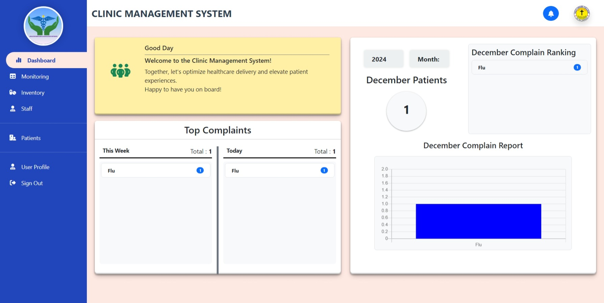
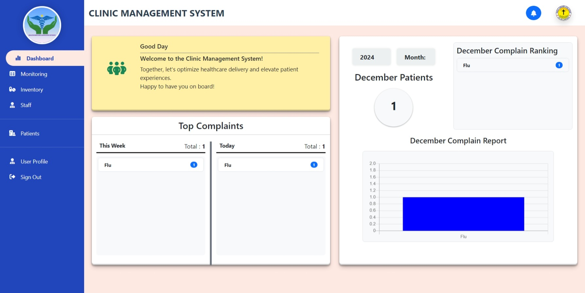

Aaron Jireh Avendano
Cyber Security
Email: aaron@gmail.com
Phone: (911) 81-2356
Website: www.Security.com
Portfolio
Here is one of the project I have worked on:
 



Professional Summary
A highly motivated and results-oriented cybersecurity professional with expertise in threat detection, incident response, and security architecture. Proven ability to identify vulnerabilities, implement robust security measures, and mitigate cyber risks to protect critical IT infrastructure and sensitive data. Dedicated to staying abreast of evolving cyber threats and emerging technologies to ensure proactive security posture within dynamic IT environments.
Work Experience
Cyber Security | 5 years on field
January 2022 - 2027
- Successfully implementing security measures that stopped a potential cyberattack before it could cause damage or disruption. This could involve things like configuring firewalls, implementing intrusion detection systems, or conducting regular vulnerability assessments.
- Discovering and fixing security flaws in systems or applications before they can be exploited by attackers. This often involves using tools like vulnerability scanners and penetration testing techniques.
- Effectively managing and resolving security incidents, such as malware infections, data breaches, or denial-of-service attacks. This includes containing the incident, eradicating the threat, recovering lost data, and conducting post-incident analysis.
Education
Bachelor of Science in Information Technology
Holy Cross College, 2022 - 2027
Skills
- Programming Language: PHP, Python, C++, JavaScript
- Frameworks: CodeIgniter 4, Bootstrap 5
- Back-end: Python Django, SQL, Express Js
- Skills experience : OJT
Contact
Facebook: Aaron Jireh
Youtube: CyberRon
Instagram: SecReh